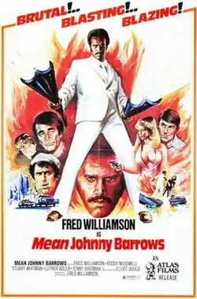

Mean Johnny Barrows
| Mean Johnny Barrows | |
|---|---|
 Film poster by John Solie | |
| Directed by | Fred Williamson |
| Written by | Jolivett Cato Charles Walker |
| Starring | Fred Williamson Roddy McDowall Stuart Whitman Luther Adler Jenny Sherman Elliott Gould |
| Music by | Coleridge-Taylor Perkinson |
| Distributed by | Ramana Productions Inc. |
Release date |
|
Running time | 75 minutes |
| Country | United States |
| Language | English |
Mean Johnny Barrows is a 1976 American crime drama film starring Fred Williamson, who also directed the film; Stuart Whitman; Luther Adler; Jenny Sherman; and Roddy McDowall also star.[1]
Plot
Johnny Barrows (played by Fred "The Hammer" Williamson) a winner of the Silver Star is dishonorably discharged from the army for punching out his Captain. Shipped back home Stateside, Johnny promptly gets mugged and hauled in by some racist cops who believe him to be drunk. Unable to secure gainful employment, Johnny finds himself on the soup line (with a cameo from "Special Guest Star" Elliott Gould) and down on his luck.
Walking into an Italian restaurant hoping for a handout, he's offered a job as a killer by Mafiosi Mario Racconi (Stuart Whitman) and his girlfriend Nancy (Jenny Sherman) but Johnny turns him down. It seems that he's not slipped so far as to start doing odd jobs for the Mob. Eventually, Johnny lands a job at a gas station cleaning toilets and scrubbing floors for the mean penny-pinching Richard (R.G. Armstrong), who receives a beating for ripping off Barrows.
Meanwhile, a Mafia war starts brewing between the Racconi family and the Da Vincis (the family, not the painter). Seems the Da Vinci family wants to bring in all kinds of dope and start peddling it to black and Hispanic kids. The Racconis, being an upstanding Mob family, wants no part of that on their streets. And so it goes, with the Racconi family wiped out in a treacherous double-cross, with only Mario left standing.
Nancy is kidnapped by the Da Vinci family and gets a message to Johnny claiming that she was made to do "terrible things". Brought to the brink by poverty, The Man constantly screwing him and his love for Nancy, Johnny agrees to become a hired killer for Mario to avenge the Racconis. And so the body count starts going up as Johnny in all his white-suited glory gets mean and starts killing his way through the Da Vinci family.
Cast
- Fred Williamson as Johnny Barrows
- Roddy McDowall as Tony Da Vince
- Stuart Whitman as Mario Racconi
- Luther Adler as Don Racconi
- Jenny Sherman as Nancy
- Elliott Gould as Professor Theodore Rasputin Waterhouse
- Anthony Caruso as Don Da Vince
- R.G. Armstrong as Richard
- Mike Henry as Carlo Da Vince
- Aaron Banks as Captain O'Malley
- Robert Phillips as Ben
- James Brown as Police Sergeant
Additional notes
The structure of the film was previously used a year before in the film The Farmer (which was shot in 1975 but released in 1977).
References
- ^ "Mean Johnny Barrows". afi.com. Retrieved 2024-02-02.
External links